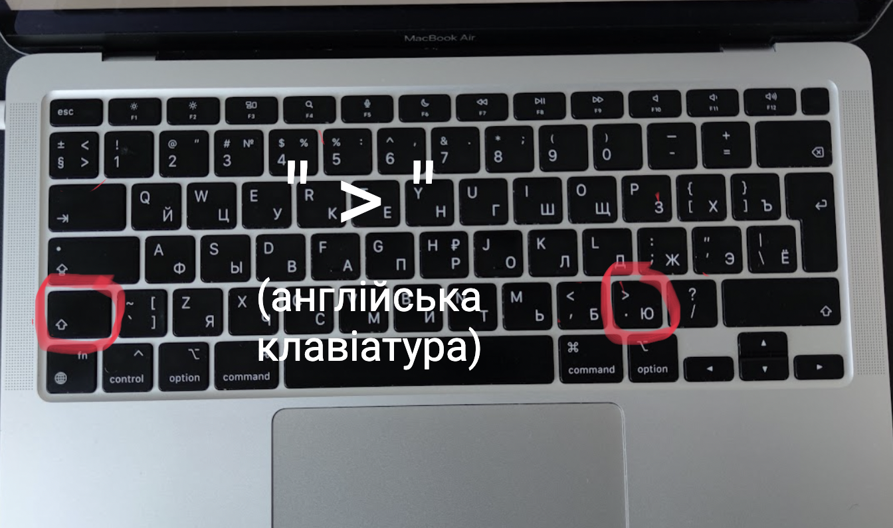
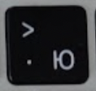

Часто при наборі тексту у нових користувачів макбуків виникають проблеми з пошуком деяких букв та символів на клавіатурі мак. Тож я вирішив показати на зображенні де знаходиться знак більше ">".
Знак більше ">" на мак (англійська мова клавіатури)

Щоб поставити знак більше необхідно перемкнутися на англійську мову клавіатури. Затисніть клавішу SHIFT (  ) та натиснути кнопку з буквою Ю (
) та натиснути кнопку з буквою Ю (
Приклади використання символу >
Символ ">" використовується в різних контекстах залежно від мови програмування, операційної системи або командного рядка. Ось кілька прикладів:
У командному рядку в операційній системі, символ ">" використовується для перенаправлення виводу з команди у файл, наприклад:
ls > file.txtЦя команда виводить список файлів та каталогів у поточному каталозі та перенаправляє його у файл file.txt.У мові програмування, символ ">" може використовуватися як оператор більше за (greater than) для порівняння значень, наприклад:
if (a > b) { // do something }Цей код порівнює значення змінної a зі значенням змінної b та виконує певну дію, якщо a більше за b.У Shell-сценаріях або Bash-скриптах, символ ">" може використовуватися для перенаправлення виводу від команди в файл, наприклад:
echo "Hello, world!" > output.txtЦей код записує рядок "Hello, world!" в файл output.txt.У деяких системах управління базами даних, символ ">" використовується для виконання SQL-запитів з файлу, наприклад:
mysql -u username -p password < query.sql > results.txtЦя команда виконує запити, що містяться у файлі query.sql у MySQL-сервері та перенаправляє результат у файл results.txt.У математиці, символ
>використовується для позначення "більше за", і використовується для порівняння двох значень. Наприклад:
5 > 2- це істинний вираз, оскільки 5 більше за 2.5 > 10- це хибний вираз, оскільки 5 не більше за 10.
Дізнайтесь розміщення інших символів на клавіатурі макбуку на сторінці: Клавіатура мак.